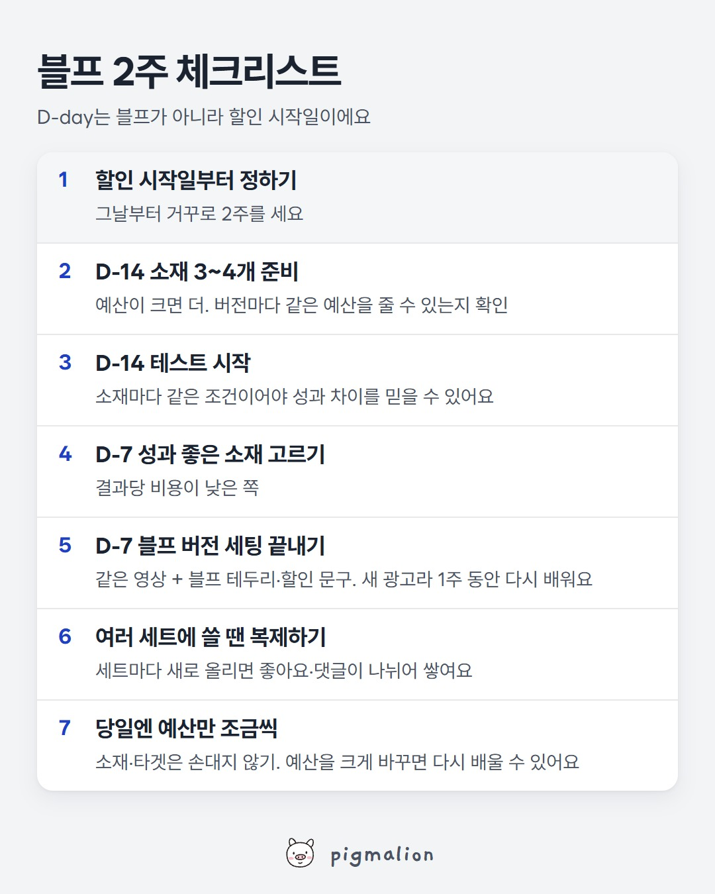

블프 2주 체크리스트
저장해두고 성과가 떨어질 때 위에서부터 확인하세요

이미지를 길게 누르면 저장돼요
메타 공식 도움말로 보는 자세한 내용
광고 경매
누군가에게 광고를 보여줄 기회가 생길 때마다 경매가 열려요. 그 사람이 타겟에 들어 있는 광고들이 경매에 참여하고, 입찰가·추산 행동률·광고 품질을 합친 '총 가치'가 가장 높은 광고가 노출돼요. 한 사람이 여러 광고주의 타겟에 동시에 들어갈 수 있어요.
블프처럼 광고주가 몰리는 시기엔 같은 사람을 두고 경쟁하는 광고가 많아지니 노출 단가가 오르기 쉬워요. (경매 원리에서 나오는 설명이고, 메타가 블프 단가 상승률을 공식으로 낸 수치는 없어요)
소재 비교는 A/B 테스트로
A/B 테스트는 타겟을 나눠 버전마다 다른 사람에게 보여줘요. 한 사람이 두 버전을 다 보지 않아서 어느 쪽이 나은지 비교할 수 있어요. 공정하게 비교하려면 버전마다 같은 예산을 쓰는 게 좋다고 해요.
광고 세트를 직접 켜고 끄면서 비교하는 비공식 테스트는 타겟이 겹쳐 결과를 믿기 어려울 수 있다고 메타가 권하지 않아요.
한 광고 세트 안에서 광고끼리 결과당 비용을 비교하면, 결과당 비용이 높아 보이는 광고가 실제로는 더 효율적일 수도 있어요. 메타는 이걸 '분석 데이터 효과'라고 부르고, 결과는 광고 세트(또는 캠페인) 단위로 보라고 해요.
블프 버전도 다시 배워요
소재를 바꾸거나 광고 세트에 새 광고를 넣으면 머신 러닝 단계가 처음부터 다시 시작돼요. 같은 영상에 테두리나 문구만 더해도 새 광고예요. 머신 러닝은 보통 마지막 '영향이 큰 변경' 후 일주일 동안 결과가 약 50건 쌓이면 끝나요.
2주는 제 기준이에요
메타 공식 기준은 '1주·약 50건'이에요. 2주는 테스트 1주 + 블프 버전이 다시 배우는 1주를 더한 제 실무 기준이에요. 결과가 적게 나오는 계정이라면 더 일찍 시작하세요.
출처: Meta 비즈니스 지원 센터 「광고 경매 정보」, 「A/B 테스트 정보」, 「광고 성과의 변동 이해하기」, 「영향이 큰 변경 및 머신 러닝 단계」
AI 프롬프트
■ 어디에: 챗GPT, 클로드, 제미나이 중 아무거나 (무료 버전도 돼요)
■ 무엇을: 소재 테스트 결과 표 + 할인 시작일 + 오늘 날짜
■ 어떻게:
- 광고 관리자 → 테스트한 캠페인 열기 (A/B 테스트로 했다면 "실험" 메뉴의 결과)
- 소재(버전)마다 지출 금액, 결과, 결과당 비용, 노출, 클릭이 보이게 하기
- 표를 드래그해서 복사(Ctrl+C)하거나 "내보내기"로 CSV 받기
- AI 새 대화에 아래 프롬프트를 "복사" 버튼으로 복사해 붙여넣고, 맨 끝 자리에 표와 날짜를 붙여넣기
- 엔터. 블프에 쓸 소재와 남은 일정이 나와요
너는 메타 광고를 운영하는 퍼포먼스 마케터야.
블랙프라이데이 같은 할인 행사에 쓸 소재를 고르려고 해. 아래에 A/B 테스트 결과 표와 할인 시작일, 오늘 날짜를 붙여넣을게.
참고할 사실 (메타 공식 도움말 기준):
- A/B 테스트는 버전마다 타겟을 나눠서 보여주기 때문에, 버전끼리 결과당 비용을 비교할 수 있어.
- 한 광고 세트 안에서 광고끼리 결과당 비용을 비교하면 잘못 읽기 쉬워('분석 데이터 효과').
- 광고 세트에 새 광고를 넣거나 소재를 바꾸면 머신 러닝 단계가 처음부터 다시 시작돼. 보통 일주일 동안 결과가 약 50건 쌓이면 끝나고, 그동안은 성과가 불안정하고 결과당 비용이 높아.
- 예산은 조금 바꾸면 거의 영향이 없지만, 크게(예: 10배) 바꾸면 다시 배울 수 있어.
이 순서로만 봐줘.
0) 테스트 방식 확인: 한 광고 세트 안에서 돌린 결과라면, 광고끼리 비교는 참고용이라고 먼저 짚어줘.
1) 결과 정리: 버전마다 지출, 결과 수, 결과당 비용을 표로 정리하고, 결과당 비용이 낮은 순서로 줄 세워줘.
2) 믿을 만한지: 버전마다 결과 수가 너무 적어서 차이를 믿기 어려운 경우 "판단 보류"라고 적어줘. 1위와 2위 차이가 작으면 그것도 말해줘.
3) 블프 소재 추천: 블프 버전으로 만들 소재를 1~2개 골라주고 이유를 한 줄씩. 원래 소재는 그대로 두고 블프 테두리나 할인 문구만 더하는 방향으로 아이디어 2개.
4) 남은 일정: 오늘 날짜와 할인 시작일을 보고, 블프 버전을 언제까지 세팅해야 할인 전에 머신 러닝이 끝날지 날짜로 알려줘. 이미 1주가 안 남았다면 그것도 솔직하게.
5) 당일 운영: 할인 기간에 하지 말아야 할 수정을 많아야 3개.
숫자가 부족해서 판단 못 하는 부분은 "판단 보류"라고 따로 적고, 추측은 추측이라고 써줘.
[여기에 테스트 결과 표 붙여넣기 — A/B 테스트인지, 한 광고 세트 안에서 돌린 건지도 한 줄로]
[할인 시작일: 예) 11월 27일]
[오늘 날짜: 예) 11월 20일]